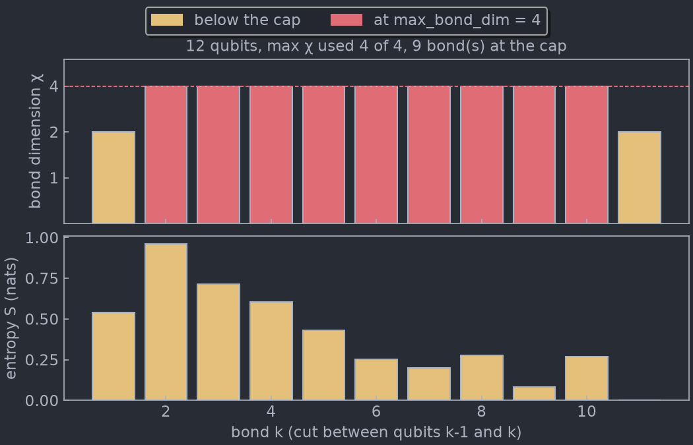
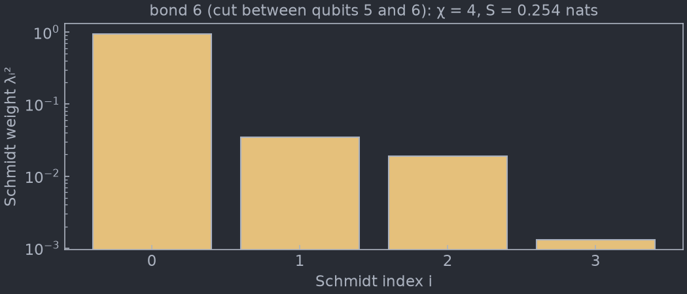

Visualization¶
tensorweaver.visualization draws the entanglement structure of an MPS: how
large each bond has grown, how much entanglement each cut carries, and what the
bond dimension cap cut off. It can also keep a window open that follows a state
while you evolve it:
plotbondsplots the bond dimension and the entanglement entropy of every cut.plotschmidtplots the Schmidt spectrum of one cut.BondWindowis a window that moves gradually to the new bond structure each time you callupdate().
They answer the question that decides whether an MPS run can be trusted: is the bond dimension large enough for this circuit, and if not, where does it fall short? See Cutoffs and bond dimension for the knobs involved.
Installation¶
The plots need matplotlib, which the base install leaves out. The
visualization extra adds it:
The extra installs mimiqcircuits[visualization], so the plots use the same
matplotlib version range and the same MIMIQ style as
mimiqcircuits.visualization.plothistogram. import tensorweaver alone never
loads matplotlib; the module is imported only when you ask for it:
A BondWindow also needs a GUI toolkit
for matplotlib to draw into; see Windows and backends.
The two plots do not.
Every function takes a TwState, such as the one
TwSimulator.evolvezerostate returns, or a bare MPS.
Bond numbering¶
The plots number bonds as MPS.bond_dim and MPS.schmidt_values do:
bond k is the cut between qubits k-1 and k. An n-qubit chain has
interior bonds 1 to n-1; bonds 0 and n are its open ends, always of
dimension 1, and are not drawn.
MPS.all_entropies() counts the other way, its element k being the cut
between qubits k and k+1. The plots take care of the offset, so the entropy
drawn at bond k is always that of the cut between k-1 and k.
Bond dimensions and entropies: plotbonds¶
import mimiqcircuits as mc
import tensorweaver as tw
from tensorweaver.visualization import plotbonds
# A 12-qubit brickwork: RY rotations, then CX bricks on alternating pairs.
# Six layers entangle the middle of the chain more than χ = 4 can hold.
c = mc.Circuit()
for layer in range(6):
for q in range(12):
c.push(mc.GateRY(0.5 + 0.1 * q), q)
for q in range(layer % 2, 11, 2):
c.push(mc.GateCX(), q, q + 1)
state, fidelity = tw.TwSimulator(bonddim=4, strict_bonddim=False).evolvezerostate(c)
print(fidelity) # 0.9954...: truncation discarded some weight
fig = plotbonds(state)
fig.savefig("bonds.png")

Reading the plot¶
Top panel: bond dimension χ. One bar per bond, on a log-2 axis, since bond
dimensions grow by doublings: χ = 2 and χ = 256 both stay readable. The dashed
line is max_bond_dim, the cap set by TwSimulator(bonddim=...).
- A red bar has reached the cap. It holds as many Schmidt values as the
simulator allows, so any further weight on that cut was discarded. Red marks
where truncation can happen, not where it did: a state can fit its cap
exactly, as a GHZ state does at χ = 2, and then nothing is lost. The fidelity
returned with the state, and
plotschmidt, tell how much it cost. - A bar below the cap was not limited by
bonddim, thoughsv_cutoffcan still have dropped small Schmidt values there. - χ = 1 means the two sides of the cut are not entangled at all.
- Near the ends of the chain χ is bounded by the chain itself: bond
kcan never exceed2**min(k, n-k)for qubits.
The title gives the largest χ in use and how many bonds sit at the cap. Several
bonds at the cap and a fidelity below 1 mean the run needs a larger bonddim.
Bottom panel: entanglement entropy S. The von Neumann entropy of each cut,
in nats: S = -Σ λᵢ² ln λᵢ² over the Schmidt values λᵢ. Zero is a product
cut. One Bell pair across a cut gives ln 2 ≈ 0.693, and a cut of χ Schmidt
values carries at most ln χ. The entropy says how much entanglement a bond
carries, where χ only says how much room it takes.
The spectrum of one cut: plotschmidt¶
from tensorweaver.visualization import plotschmidt
# Bond 6, the middle of the chain above, is at the cap.
fig = plotschmidt(state, 6)
fig.savefig("bond6.png")

Each bar is a Schmidt weight λᵢ², the probability carried by one Schmidt
vector of the cut, largest first, on a log scale. The weights of a normalized
state add up to 1. The title repeats χ and the entropy of the cut.
- A spectrum that falls off fast, as here, means the cut is well represented: the smallest weight kept is about 10⁻³, so what the cap cut off beyond it was small.
- A spectrum still high where it ends means the cap is cutting off weight
that matters, and a larger
bonddimwould change the result.
Reading the spectrum moves the MPS orthogonality center to bond. That changes
the MPS gauge, not the state: no amplitude changes.
In notebooks and scripts¶
plotbonds and plotschmidt return a matplotlib.figure.Figure.
- In a notebook, a call on the last line of a cell displays the figure
once. Assigned to a variable (
fig = plotbonds(state)), it displays nothing until you showfig. - In a script, save it with
fig.savefig(...), or open it withmatplotlib.pyplot.show().
Both take mimiqstyle=True by default; mimiqstyle=False draws in your active
matplotlib style instead.
Watching the bonds grow: BondWindow¶
BondWindow opens a window on a state and redraws it only when you call
update(). Each update reads the state as it is then, and moves the picture
there gradually over about a second. Between two updates you evolve the state
by as many gates as you like, so you choose when to look.
import matplotlib.pyplot as plt
import mimiqcircuits as mc
import tensorweaver as tw
from tensorweaver.visualization import BondWindow
sim = tw.TwSimulator(bonddim=16, strict_bonddim=False)
state = sim.build_state(20) # |0...0>: every bond at χ = 1
window = BondWindow(state)
# One layer: an RY on every qubit, then a CX ladder. Compile it once.
layer = mc.Circuit()
for q in range(20):
layer.push(mc.GateRY(0.7), q)
for q in range(19):
layer.push(mc.GateCX(), q, q + 1)
step = sim.compile(layer)
for _ in range(6):
sim.evolve(state, step) # evolve in place, any number of gates...
window.update() # ...then animate to where the state is now
plt.show() # keep the window open at the end
TwSimulator.build_state(n) gives a fresh |0…0⟩ state, and
TwSimulator.evolve(state, compiled) evolves it in place by a circuit that
TwSimulator.compile prepared. The window keeps a reference to state and
reads it at every update().
What an update animates¶
The window shows what plotbonds shows. During an update:
- bond dimensions move to their new values along the log-2 axis, so a bond going from 2 to 8 passes through 4 half way;
- bars fade to red as they reach the cap, and back if they leave it;
- entropies and the entropy axis move to their new values;
- the title changes to the new state at the end.
The animation follows the clock: if the window redraws slowly it shows fewer frames, but still takes the time asked for.
update()¶
window.update() # animate over the window's duration
window.update(duration=0.3) # a quicker transition
window.update(duration=0) # jump straight to the new picture
update() always reads the state the window was created on. To watch
another state, open another window.
| Argument | Default | Effect |
|---|---|---|
duration |
the window's | Length of the animation in seconds; 0 jumps straight to the new picture. |
BondWindow(state, mimiqstyle=True, duration=1.0) takes the same mimiqstyle
as plotbonds, and duration sets the default length of an update.
update() raises RuntimeError once the window has been closed; open a new
BondWindow to continue.
Windows and backends¶
A window needs an interactive matplotlib backend, which in turn needs a GUI
toolkit installed. The toolkit belongs to your environment, so the
visualization extra does not install one:
- Tk comes with most Python installs (python.org, Windows, conda, most Linux distributions), and matplotlib uses it with no setup.
- Qt works with
pip install PyQt6orpip install PySide6. Use it where Python was built without Tk, as Homebrew's is.
Where the window is drawn from matters:
- In a script, the window repaints only while
update()runs. Between two updates it shows the last frame but does not respond to resizing. End the script withplt.show()to keep the window open and responsive, or pause withplt.pause(seconds)between updates. - In Jupyter, run
%matplotlib qt(or%matplotlib tk) before creating the window. The notebook's default inline backend draws static images, which cannot animate. - With a non-interactive backend (
Agg, inline), nothing opens andupdate()redraws the figure in one step. Nothing fails, so the same code runs in tests and on headless machines.
Cost¶
The plots read little of the state. Bond dimensions are read directly. The
entropies move the orthogonality center along the chain once, taking one SVD of
a single site tensor per bond, and plotschmidt does the same for one cut. The
MPS is never copied as a whole. A BondWindow makes the same reads at every
update(), and none in between.
A state from a TwSimulator(usegpu=True) is brought back to host memory
before it is read, as for any other read-out of the state.